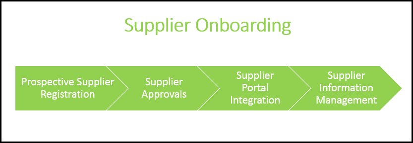

Supplier Onboarding
Supplier Onboarding is an onboarding process to register the prospective suppliers to the system. The onboarding process includes registering the suppliers to the system, evaluating and approving the supplier requests, integrating the supplier requests with the supplier portal using Salesforce, and managing the suppliers. The image below displays the phases of Supplier Onboarding.

The following steps are involved in Supplier Onboarding process.
- Prospective Supplier Registration
- Supplier Review and Approvals
- Supplier Portal Integration
- Supplier Information Management
Supplier Onboarding is the first step when it comes to interacting with the suppliers. The first step is registering the suppliers. It can be done by an internal member or the suppliers can register themselves. After the registration of supplier, the buyer or internal stakeholders review the request and approve them. After approving the request, an account is created for the supplier, with a button click only. You can then manage the suppliers - create and assign surveys, review survey responses, and update the Compliance Status of the suppliers.
Benefits of using Supplier Onboarding:
- The entire process of Supplier Onboarding is handled with minimal manual interference.
- Provides a faster and easier way to request, receive, and approve requests from prospective suppliers.
- Supplier Onboarding process is standardized and streamlined.
- Promotes collaboration between the buyers and suppliers.
- Helps to monitor supplier information.
- Supplier Self-Registration enables the suppliers to submit the documents and information for approval, electronically.
- Configurable Surveys and Requirements.
Use Case
Note: We provide Usecases for a detailed explanation of any topic with a relevant example. The best practice is to follow the usecase for each topic, so you can understand the entire scenario and implement it in your system.
Tier 1 Mobiles, a mobile phones manufacturing company, procures the hardware from a variety of suppliers and assembles them at their manufacturing unit. Sam Cooper, Supplier Onboarding Manager, is responsible for all the onboarding processes of the suppliers that take place at Tier 1 Mobiles.
Tier 1 Mobiles procures the following products.
- Mobile Hardware
- LCD strips
- Integrated Circuit Boards
- Speakers
- Microphones
Tier 1 Mobiles has multiple suppliers for each item. Sam handles the onboarding process of all suppliers. The suppliers can even self-register, if they are interested, from the website of Tier 1 Mobiles. Each supplier adheres to the processes as defined by Tier 1 Mobiles. The Onboarding is done using the mentioned phases, by Sam.